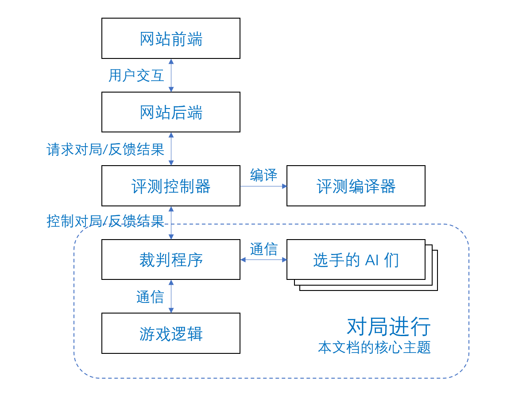

游戏开发手册
游戏开发者向平台方提供的完整游戏应包括如下内容：
- 游戏逻辑和逻辑说明文档
- AI SDK 和 SDK 说明文档
- 播放器和播放器说明文档
游戏逻辑、AI 和播放器都有模板样例，游戏开发者可以向平台管理员申请获取。
零、平台架构与游戏流程

一、游戏逻辑
游戏逻辑方应提供给评测端：一份可部署、没有异常的游戏逻辑代码。
游戏逻辑方应提供给网站：面向用户的逻辑说明文档。
游戏逻辑由 judger 启动进程，并通过标准输入输出与 judger 进行通信。
通信流程
- judger 在启动游戏逻辑后，向游戏逻辑发送初始化信息。
- judger 和游戏逻辑开始交互，交互类型分为以下几种：
- 游戏逻辑向 judger 发送各种消息，judger 需要进行解析与处理；
- 游戏逻辑请求 judger 直接将消息原封不动地转发给AI；
- judger 将 AI 发送的消息封装后转发给游戏逻辑；
- judger 将 AI 的异常情况报告给游戏逻辑。
- 游戏逻辑向 judger 提供玩家得分，并报告游戏结束。在游戏逻辑发送结束消息之前，请务必确保所有操作（尤其是 IO 操作，如写入回放文件）已经完成。
报文格式
由于游戏逻辑与 judger 之间使用标准输入输出进行通信，约定好一个标准的报文格式以区分报文的开头和结尾非常重要。
judger 向逻辑发包：\(4+n\) 格式
数据包的包头为 \(4\) 个字节表示的数据包长度 \(n\)，字节序为大端序，随后发送数据包正文。
逻辑向 judger 发包：\(4+4+n\) 格式
数据包的包头由 \(8\) 个字节组成，前 \(4\) 个字节为大端序表示的数据包正文长度 \(n\)，后 \(4\) 个字节为大端序表示的发送目标。当发送目标为 \(-1\) 的时候表示该消息需要 judger 进行解析，当发送目标不为 \(-1\) 的时候表示要转发给的 AI 的编号。
\(8\) 个字节的包头发送完成后，随后发送数据包正文。
通信协议
judger 向逻辑发送初始化信息
在 judger 启动游戏逻辑后，会向逻辑发送 JSON 格式的初始化信息。示例如下：
{
"player_list": [1, 0, 2],
"player_num": 3,
"config": {"random_seed": 1674552577091},
"replay": "/replay/replay.json"
}
player_list : number[]
按照玩家编号顺序表示的玩家类型。0 表示未正常启动，1 表示本地 AI，2 表示网页播放器。
player_num : number
表示玩家数量。与player_list列表长度一致。
上例表示游戏一共有 3 名玩家，其中 0 号玩家为本地 AI，1 号玩家未正常启动，2 号玩家使用了网页播放器。
config : object
由后端传给评测机的超参数，该字段的功能尚不成熟。
replay : string
表示如果游戏逻辑带有录像文件，则应当写到该路径下。
逻辑向 judger 发送回合配置信息
在 \(4+4+n\) 的报文格式中，第二个 \(4\)（即发送目标）的取值为 \(-1\)。
游戏进行过程中，逻辑可以向 judger 发送关于限制 AI 运行的配置信息。示例如下：
time : number
表示该回合 AI 最长可运行的时间，单位为秒。
length : number
表示该回合可以接受的 AI 单条消息正文的最大长度，单位为字节。
judger 如果未收到此类设置，则默认时间限制为 3s，最大长度为 2048 字节。
逻辑向 judger 发送正常回合消息
在 \(4+4+n\) 的报文格式中，第二个 \(4\)（即发送目标）的取值为 \(-1\)。
游戏进行过程中，逻辑可以向 judger 发送消息，以表示当前需要 judger 进行的操作。示例如下：
state : number
一个正数，表示当前的回合数。
listen : number[]
表示本回合需要 judger 监听消息的 AI 序号。可以为空。
judger 允许在同一回合中同时监听多个 AI，但在实际操作中并不建议这样做，因为这会为玩家超时的异常处理带来困扰。
player : number[]
表示本回合需要 judger 发送消息的 AI 序号，与content字段一一对应。可以为空。
content : string[]
表示本回合需要 judger 向 AI 发送的具体消息内容，AI 的编号与player字段一一对应。可以为空。
注意 judger 会将消息内容原封不动地转发给对应的 AI，不会加上任何附加内容。比如如果 <消息0> 为aglove，那么 0 号 AI 也只会收到原封不动的aglove。
逻辑与 judger 的通信协议对于消息内容的格式没有任何要求，游戏开发方需自行制定游戏逻辑和 AI 的通信协议。
上例表示当前回合是 233 回合，向 0 号 AI 发送 <消息0>，向 1 号 AI 发送 <消息1>，本回合只接收 0 号 AI 的消息。
judger 视角下回合数的概念和游戏逻辑对于回合数的一般概念并不一致。它更像是一种发起计时的标志，因为 judger 一旦发现
state的数值增加，它就会立刻对listen字段中的所有 AI 重新开始计时。事实上，如果 judger 两次收到的正常回合消息中，
state字段的数值并未发生改变，那么在 judger 第二次收到该正常回合消息时，并不会重置计时。逻辑开发者可以利用这一特性在同一计时回合中多次进行消息广播。
逻辑请求 judger 直接将消息转发给指定 AI
在 \(4+4+n\) 的报文格式中，第二个 \(4\)（即发送目标）的取值为需要发送给的 AI 编号。
逻辑与 judger 的通信协议对于 \(4+4+n\) 中 \(n\) 的格式没有任何要求，游戏开发方需自行制定游戏逻辑和 AI 的通信协议。
注意：该事件不会进行任何计时的重置，也不会更新计时回合。
逻辑向 judger 发送观战消息
在 \(4+4+n\) 的报文格式中，第二个 \(4\)（即发送目标）的取值为 \(-1\)。
游戏进行过程中，逻辑可以向 judger 发送观战消息，judger 会立即将消息转发给所有观战的播放器。示例如下：
watch : string
表示观战消息。
judger 向逻辑发送 AI 正常消息
当 judger 收到监听列表中的 AI 发来的消息时，会将其转发给逻辑。格式示例如下：
player : number
非负整数，表示发送消息的 AI 编号。
content : string
表示发送的具体消息内容。
time : number : experimental
表示当前回合当前 AI 用时的毫秒数。
上例表示 0 号 AI 发送了 <消息0>，且从回合开始计时到消息发送时，0 号 AI 总计用时 2785 毫秒。
judger 向逻辑发送 AI 异常消息
当 judger 监听列表中的某个 AI 超时或发生错误时，会将这一事件告知逻辑。通信格式示例如下：
content : string
一个 JSON 字符串，反序列化后表示具体的异常内容，格式如下：
player : number
非负整数，表示发生异常的 AI 编号。
state : number
正整数，表示 AI 发生的异常所对应的回合数。例如超时异常的state就表示计时结束的回合数。
error : number
数字表示的错误类型。
- 0: runError
- 1: timeOutError
- 2: outputLimitError
error_log : string
字符串表示的错误类型，与上表对应。
逻辑表示对局已结束，向 judger 请求 AI 结束状态（新协议，可选）
在 \(4+4+n\) 的报文格式中，第二个 \(4\)（即发送目标）的取值为 \(-1\)。
当玩家 AI 向逻辑发送完最后一条消息时，逻辑应通过该报文表示对局已结束，并向 judger 请求 AI 的结束状态，以便之后给出玩家结束状态的最终判断。
该报文内容如下：
judger 向逻辑回复 AI 结束状态（新协议，可选）
judger 收到逻辑发来的 request_end_state 报文（见上一节）后，应结束所有的 AI 进程，并将 AI 的结束状态回复给逻辑。
该报文示例如下：
end_state : string
一个 JSON 字符串，反序列化后为一个字符串数组，依次表示 judger 判断的各个玩家的结束状态。
需要特别注意的场景是，玩家 AI 可能在发完最后一条消息后突然崩溃。逻辑在遇到这类情况时，可能需要重新考虑各个玩家的给分。
逻辑向 judger 发送游戏结束消息
在 \(4+4+n\) 的报文格式中，第二个 \(4\)（即发送目标）的取值为 \(-1\)。
当游戏结束、逻辑完成其他收尾工作后，逻辑需向 judger 发送游戏结束消息，并告知各玩家的分数。
在游戏逻辑发送结束消息之前，请务必确保所有操作（尤其是 IO 操作，如写入回放文件）已经完成。
示例如下：
end_info : string
一个 JSON 字符串，反序列化后表示各玩家的分数，格式如下：
score[0-4]分别为数值表示的 0 号玩家到 4 号玩家的分数。
由于历史遗留原因，请务必确保逻辑传给 judger 的end_info中，各字段按照玩家编号升序排列。
end_state : string : optional
一个 JSON 字符串，反序列化后为一个字符串数组，依次表示各个玩家的结束状态。
游戏逻辑可以覆盖 judger 给出的结束状态。比较典型的应用场景是，游戏逻辑希望给出 IA 结果（表示 Illegal Action），而这一点显然不可能由 judger 自己给出判断。
允许的结束状态有："OK", "RE", "TLE", "MLE", "OLE", "STLE", "EXIT", "UE", "CANCEL", "IA"。
二、AI
游戏逻辑方应提供给网站：AI SDK，面向用户的 AI SDK 说明文档。最好能够提供一份样例 AI。
报文格式
judger 向 AI 发包：不进行任何封装
judger 会将逻辑通过逻辑向 judger 发送正常回合消息和逻辑请求 judger 直接将消息转发给指定 AI发来的消息原封不动地转发给指定 AI。
AI 向 judger 发包：\(4+n\) 格式
数据包的包头为 \(4\) 个字节表示的数据包长度 \(n\)，字节序为大端序，随后发送数据包正文。
通信协议
游戏逻辑和 AI 的通信协议由游戏开发方制定。judger 对二者进行的消息传输只起到转发功能，游戏逻辑有义务对 AI 发来的消息进行检查和处理。
AI SDK
从事 AI 开发的选手不应关心上述细节，因此游戏开发方在交付游戏时，必须配备封装好基本通信实现的 AI SDK。
此外，选手也不需要关心游戏开发方制定的逻辑与 AI 的通信协议，因此游戏开发方也应对这一部分进行封装，以方便选手开发。
平台方提供的 AI 模板中已经给出封装好通信部分的基础 AI SDK。游戏开发方可在此基础上添加对于自己制定的通信协议的封装，也可以加入一些易于使用的函数，方便选手使用。
三、播放器
播放器是指让人类可以在图形化界面下观看对局回放以及与游戏逻辑进行交互的网页程序。网站提供了播放器的连接接口。
为方便描述，以下用离线模式代指观看对局回放的模式，用在线模式代指与游戏逻辑进行交互的模式。
播放器开发者在实现播放器自身的功能之外，还应处理播放器与网站的对接环节，其中分为与前端页面的对接和与评测机的对接。
| 模式 | 与前端页面对接 | 与评测机对接 |
|---|---|---|
| 离线模式 | 需要实现 | 不需要实现 |
| 在线模式 | 需要实现 | 需要实现 |
| 观战模式 | 需要实现 | 需要实现 |
与前端页面对接
网页使用 iframe 加载游戏播放器的html文件，并通过传递消息的方式与游戏播放器进行必要的通讯。在一场游戏中，游戏播放器与前端页面可能有如下通信：
- [网→播] 发送在线模式初始化信息
- [网→播] 发送离线模式初始化信息
- [网→播] 发送观战模式初始化信息
- [网→播] 请求加载指定帧的回放
- [网→播] 请求加载下一帧的回放
- [网→播] 告知参与游戏的玩家名称
- [播→网] 告知回放文件的总帧数
- [播→网] 告知所需占用的页面高度
如无特殊说明，通信的数据均为json格式。
发送在线模式初始化信息
适用模式：在线模式
通信方向：前端页面→播放器
通信时机：玩家以人类身份进入在线对局后，点击“准备”按钮时
通信内容：Base64编码的令牌
令牌的作用参见播放器请求进入对局一节。
通信格式：
发送离线模式初始化信息
适用模式：离线模式
通信方向：前端页面→播放器
通信时机：对局详情回放页加载成功时
通信内容：表示回放文件的Blob对象，可用FileReader解析
通信格式：
注意：网页向播放器发送离线模式初始化信息后，播放器应随即加载首帧回放，因为网页不会再发送加载首帧的请求。
发送观战模式初始化信息
适用模式：观战模式
通信方向：前端页面→播放器
通信时机：玩家加入对局观战时
通信内容：Base64编码的令牌
令牌的作用参见播放器请求加入观战一节。
通信格式：
请求加载指定帧的回放
适用模式：离线模式
通信方向：前端页面→播放器
通信时机：用户在对局详情回放页点击上一帧或重新播放按钮时
通信内容：需加载的帧序号
通信格式：
请求加载下一帧的回放
适用模式：离线模式
通信方向：前端页面→播放器
通信时机：用户在对局详情回放页点击下一帧按钮时
通信内容：仅告知需要加载下一帧
通信格式：
告知参与游戏的玩家名称
适用模式：在线模式、离线模式、观战模式
通信方向：前端页面→播放器
通信时机：在线或离线模式下，网页准备就绪并加载完成时
通信内容：参与游戏的玩家名称列表
通信格式：
{
"message": "load_players",
"players": ["player", "player", "player 的 Sample(1)", "player 的 Sample(1)"]
}
告知回放文件的总帧数
适用模式：离线模式
通信方向：播放器→前端页面
通信时机：播放器完成对回放文件的解析时
通信内容：回放文件的总帧数
通信格式：
告知所需占用的页面高度
适用模式：在线模式、离线模式、观战模式
通信方向：播放器→前端页面
通信时机：在线或离线模式下，播放器画面加载完成，或因为各种原因高度改变时
通信内容：播放器所需占用的页面高度
通信格式：
与评测机对接——在线模式篇
用户可以在网站上以人类玩家的身份加入一个在线对局，并由人类进行游戏操作。在这之中，播放器与评测机会有如下的远程通信：
-
播放器请求进入对局（连接服务器）
-
播放器发送用户的操作信息
-
评测机发送游戏的局面信息
-
评测机发送用于计时的心跳包（可选）
如无特殊说明，通信的数据均为json格式。
播放器请求进入对局
根据与前端页面对接一节的描述，播放器将从前端页面取得一个Base64编码的令牌，在这里记为tokenB64。
对其解码，令token = atob(tokenB64)，你将得到一个人类可读的字符串。该字符串按如下规则生成：
其中，JUDGER_BASE_URL为评测机服务器的地址，MATCH_ID为对局编号，SEAT为该播放器在对局中的座位号。
根据该token，播放器应作为客户端与wss://token建立websocket连接，例如：wss://ares.judge.saiblo.net/human/123456/1，这表明该播放器在 123456 号对局的 1 号座位。
在播放器成功与评测机建立连接后，应向评测机发送如下消息：
播放器发送用户操作
播放器在用户进行操作后需要将操作信息发送给评测机，格式如下：
其中content为播放器需要发送给游戏逻辑的回合信息，它应当是一个字符串，评测机会将content原封不动地转发给游戏逻辑。content的内容应与游戏逻辑进行约定。
评测机发送局面信息
当游戏逻辑出现了新的信息，需要发送给播放器时，评测机会发送如下信息：
其中，content为游戏逻辑发送给播放器的局面信息，它是一个字符串。content的内容应与游戏逻辑进行约定。
评测机发送心跳包（可选）
游戏部署方可以选择是否为播放器提供计时接口。
若评测机为播放器提供计时接口，评测机会每5s向播放器发送一次心跳包，内容如下：
其中remain_time表示评测机认为该玩家距离该回合超时的剩余时间，以毫秒为单位。
与评测机对接——观战模式篇
用户在网站上加入某场对局观战后，播放器与评测机会有如下的远程通信：
- 播放器请求加入观战（连接服务器）
- 评测机发送游戏的历史局面信息
- 评测机发送游戏的实时局面信息
如无特殊说明，通信的数据均为json格式。
播放器请求加入观战
根据与前端页面对接一节的描述，播放器将从前端页面取得一个Base64编码的令牌，在这里记为tokenB64。
对其解码，令token = atob(tokenB64)，你将得到一个人类可读的字符串。该字符串按如下规则生成：
其中，JUDGER_BASE_URL为评测机服务器的地址，MATCH_ID为对局编号。
根据该token，播放器应作为客户端与wss://token建立websocket连接，例如：wss://ares.judge.saiblo.net/human/_123456，这表明加入 123456 号对局的观战。
评测机发送历史局面信息
播放器加入观战后，评测机会立即发送游戏的全部历史局面信息。播放器可以根据这些信息复原加入前的局面信息。评测机会发送如下信息：
其中，content为游戏逻辑发送给播放器的历史局面信息，它是一个字符串数组，内容为播放器加入观战前的所有局面信息消息。content的内容应与游戏逻辑进行约定。
评测机发送实时局面信息
当游戏逻辑出现了新的实时局面观战信息，需要发送给播放器时，评测机会发送如下信息：
其中，content为游戏逻辑发送给播放器的局面信息，它是一个字符串。content的内容应与游戏逻辑进行约定。